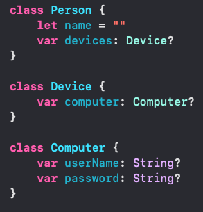

Nil
Nil indicates that a value is missing
It is used when the value is unavailable, which is handy in many situations
In this example, the "?" is attached at the end of each type to identify that the value may be nil. Since some cars have not been released or had the name announced, this feature is necessary.
Force-unwrap
Use force-unwrap operator "!" after an optional value to access its underlying value. Force-unwrapping an optional value will result in a crash if the value is nil
It is good practice to compare it to nil first because there will be an error if you force-unwrapped an optional that doesn't contain a value.
Optional Binding
Optional Binding unwraps the optional, and if it contains a value, assigns the value to a constant as a non-optional type, making it safe to work with. The following is the syntax for optional binding.
If someOptional has a value, the value is assigned to constantName and is available only within the braces. An example would be...

Just like other if statements, an else clause can be added
Functions and Optionals
Swift infers possibleNumber to be an Int? type because the initializer for Int that takes a String as a parameter may or may not be able to sucessfully convert the String to an Int. If string can be converted into an Int, possibleNumber will hold that value. If it can't, possibleNumber will be nil.
If you want to create a function that accepts an optional as an argument, simply update the type in the parameter list
Since the name of car, release date, and value, may not be announced, we allow those parameters to be nil. Since the return value may be nil, I also applied the "?" to the return value
Failable Initializer
An initializer that might return nil is a failable initializer
The "?" after init tells Swift that this initializer may return nil.
Optional binding can be used to safely unwrap
Optional Chaining
It is possible for an optional value to have optional properties, which you may think of as a box within a box. These are called nested optionals
Unwrapping nested optionals can require a lot of code, so there is an efficient way to do so, it is called Optional Chaining
This lengthy block of code can be simplified with Optional Chaining
Implicitly Unwrapped Optionals
Unwraps automatically. Should only be used when need to initialize an object without supplying the value and you’ll be giving the object a value soon afterwards